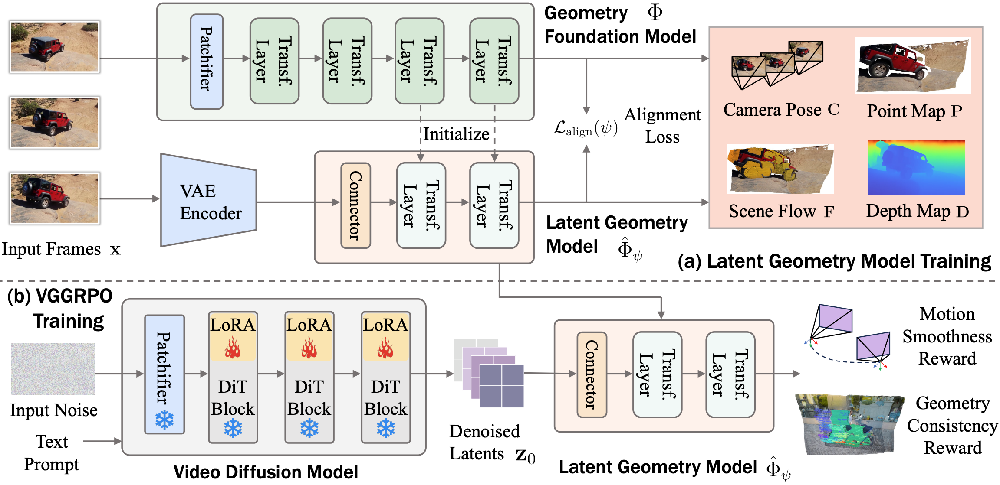

Large-scale video diffusion models achieve impressive visual quality, yet often fail to preserve geometric consistency. Prior approaches improve consistency either by augmenting the generator with additional modules or applying geometry-aware alignment. However, architectural modifications can compromise the generalization of internet-scale pretrained models, while existing alignment methods are limited to static scenes and rely on RGB-space rewards that require repeated VAE decoding, incurring substantial compute overhead and failing to generalize to highly dynamic real-world scenes. To preserve the pretrained capacity while improving geometric consistency, we propose VGGRPO (Visual Geometry GRPO), a latent geometry-guided framework for geometry-aware video post-training. VGGRPO introduces a Latent Geometry Model (LGM) that stitches video diffusion latents to geometry foundation models, enabling direct decoding of scene geometry from the latent space. By constructing LGM from a geometry model with 4D reconstruction capability, VGGRPO naturally extends to dynamic scenes, overcoming the static-scene limitations of prior methods. Building on this, we perform latent-space Group Relative Policy Optimization with two complementary rewards: a camera motion smoothness reward that penalizes jittery trajectories, and a geometry reprojection consistency reward that enforces cross-view geometric coherence. Experiments on both static and dynamic benchmarks show that VGGRPO improves camera stability, geometry consistency, and overall quality while eliminating costly VAE decoding, making latent-space geometry-guided reinforcement an efficient and flexible approach to world-consistent video generation.
Method

VGGRPO is a latent geometry-guided framework for world-consistent video post-training.
It comprises two components:
(a)Latent Geometry Model. We connect latents from the diffusion VAE encoder to a geometry foundation model via a lightweight connector, yielding a Latent Geometry Model that predicts 4D scene geometry directly from video latents without RGB decoding.
(b)VGGRPO training. We perform latent-space GRPO using two complementary rewards, camera motion smoothness and geometry reprojection consistency, computed entirely in latent space with the latent geometry model.
Together, these components align the video diffusion model toward 4D world-consistent generation on both static and dynamic scenes.
World-consistent Video Generations with VGGRPO
We compare the baseline video diffusion model (left) with the VGGRPO-aligned model (right).
Each example depicts a challenging scene; we visualize the generated video below and the reconstructed scene geometry from the inferred 4D scene representation above.
Compared with the baseline, VGGRPO (Ours) produces markedly more coherent scene structure and smoother camera motion over time, reducing geometric drift and structural artifacts in both challenging static and dynamic settings. A representative segment of each prompt is shown above each example.
Qualitative Comparisons
Qualitative Comparison on Static and Dynamic Scenes.
All baselines struggle to maintain world consistency, exhibiting unstable camera motion, geometric drift, and temporally inconsistent scene structure, with artifacts becoming more severe in dynamic scenes.
In contrast, VGGRPO (Ours) delivers improved camera stability, stronger geometric consistency, and better overall visual quality across both static and dynamic scenes, demonstrating the effectiveness of the proposed latent-space geometry-aware post-training approach.
A representative segment of each prompt is shown above the corresponding example.
Example 1 (static scene)
Example 2 (static scene)
Example 3 (dynamic scene)
Example 4 (dynamic scene)
More Qualitative Results
Additional qualitative examples further demonstrate VGGRPO's ability to generate world-consistent videos across diverse scenes, highlighting its effectiveness and flexibility for world-consistent video post-training.
Residential Walkway
The baseline exhibits unstable, jittery camera motion, making the video appear shaky over time. In contrast, VGGRPO produces a smoother camera trajectory, reducing jitter and improving both realism and overall visual quality.
Office Interior
The baseline exhibits noticeable geometric drift in the opening frames, along with blur and structural instability in objects such as the fan, floor, and chair.
VGGRPO preserves a more stable scene structure and clearer object geometry throughout the camera motion, resulting in improved geometric consistency.
Riverside Balcony View
As the camera moves toward the riverside lawn, the baseline exhibits blurred scene structure and noticeable camera jitter.
VGGRPO improves geometric consistency and camera stability, producing smoother transitions and a more realistic, world-consistent video.
Indoor TV-to-Lamp
As the camera moves from the television toward the wall lamp, the baseline exhibits shaky, temporally unstable frames with visible geometric artifacts. VGGRPO yields smoother frame-to-frame transitions and more stable camera motion, improving overall scene coherence.
House Exterior with Curved Camera Trajectory
The baseline camera shakes violently left-to-right without meaningful motion, producing distorted geometry and weakened scene coherence.
VGGRPO executes a smooth curved camera trajectory, revealing the full house with consistent structure throughout.
Bathroom Doorway
The baseline shows structural distortion around the door frame and floor, along with shaky camera motion that weakens scene coherence. VGGRPO preserves more consistent geometry without visible structural warping and produces smoother camera motion throughout the sequence.
Living Room with TV Screen
As the camera zooms in, the baseline fails to maintain the static scene displayed on the TV screen — a scene-within-a-scene that exposes geometric inconsistency.
VGGRPO preserves both the room layout and the on-screen content coherently throughout the zoom.
Office Interior
The baseline undergoes a sudden scene change mid-sequence, jumping from a bookshelf wall to a window view and breaking temporal continuity entirely. VGGRPO maintains a consistent office layout with smooth, uninterrupted camera motion.
Loft with Upper Railing
As the camera tilts upward, the baseline fails to preserve the railing's complex structure, causing visible deformation and geometric instability.
VGGRPO maintains the railing geometry consistently throughout the upward motion.
Windowed Interior
Starting from an extreme close-up of the window, the baseline struggles with this challenging viewpoint — producing heavy distortion, geometric drift, and camera jitter throughout. VGGRPO handles the close-range lateral motion cleanly, preserving consistent window geometry and stable camera movement from start to finish.
Car Driving
The baseline suffers from blur and artifacts caused by the moving car, and undergoes a sudden scene change mid-sequence that breaks temporal continuity entirely. VGGRPO maintains a coherent scene structure throughout, handling the fast-moving content without drift or interruption.
Dog Walking with a Person
As the dog and person move together, the baseline produces substantial scene blur and geometric drift, revealing its weakness in handling complex scene dynamics.
VGGRPO preserves stable scene geometry along with coherent dynamics for both the person and the dog, yielding a world-consistent sequence.
Cyclist Passing
The combination of a complex camera trajectory and a fast-moving subject pushes the baseline to its limits — producing geometric deformation, camera jitter, and scene drift simultaneously. VGGRPO handles both challenges jointly, maintaining stable geometry and smooth motion throughout the shot.
Hot Air Balloons Rising
The baseline shows camera jitter and background inconsistency as the balloons rise, undermining the continuity of the scene. VGGRPO tracks the ascent with smooth camera motion and consistent scene geometry throughout.
BibTex
If you find this paper useful in your research, please consider citing:
@article{an2026vggrpo,
title={VGGRPO: Towards World-Consistent Video Generation with 4D Latent Reward},
author={An, Zhaochong and Kupyn, Orest and Uscidda, Th{\'e}o and Colaco, Andrea and Ahuja, Karan and Belongie, Serge and Gonzalez-Franco, Mar and Gazulla, Marta Tintore},
journal={arXiv preprint},
year={2026}
}